细胞实验可预约，实验基地5、6月最新课表
原文：https://mp.weixin.qq.com/s?__biz=MzAwMzIzOTk5OQ==&mid=2247537678&idx=2&sn=1d329f22e35586dc794ce30aa6bd0ce4&chksm=9b3c2d5eac4ba448371519c5ee1ef5b877021dfdc9ca5fb5fa31b464a8175bbe0f176b2a9b02#rd 合集：实验基地

实验基地全新升级，以后会开展常态化的学习计划，为没有实验环境或技能的小伙伴提供一个规范化、科学化、高端化的实验环境。五、六月的课表安排为两套课程，有任何想法可以直接添加我们的客服微信[Biomamba_zhushou]聊一聊：
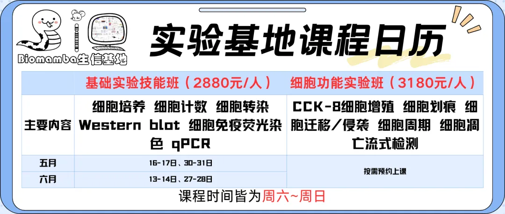
学习时间如下：2026年5-6月
基础实验技能班：5月16-17日、5月30-31日、6月13-14日、6月27-28日
细胞功能实验班：按需预约
具体课程内容

基础实验班：
内容：细胞培养细胞计数细胞转染 Western blot 细胞免疫荧光染色 qPCR
价格：2880元/人（实操）
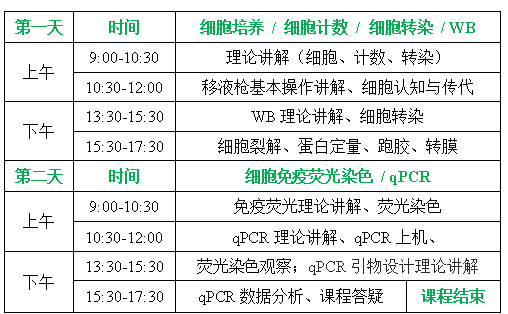
细胞功能实验班：
内容：CCK-8细胞增殖 细胞划痕 细胞迁移/侵袭 细胞周期 细胞凋亡流式检测价格：3180元/人（实操）
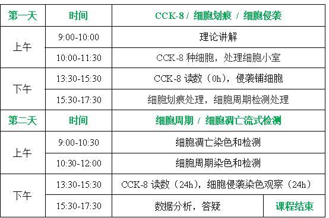
基础实验班+细胞功能实验室班，两班连报价格：5500元/人
往期活动精彩回顾：
实验ing
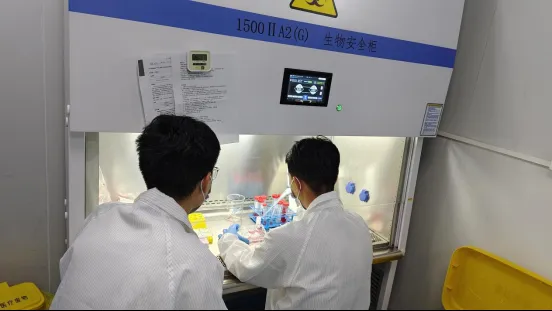
在殿堂级实验大师张博的带领下，我们的小伙伴们完成了分子克隆、WB检测相关的实操教程，先展示一下我们的实验结果 ：
：
GFP质粒转染结果，一片绿，报告基因表达成功！

菌落PCR结果均呈现集中的阳性条带！

WB条带清晰美观，学员全程自制SDS-PAGE凝胶、自行上样！
 细胞分子实验集锦： 本实验探究一细胞表面受体对肿瘤细胞生长 的作用。通过前期单细胞转录组分析，我们发现在表达该受体的癌细胞中，某基因变化差异显著，因此我们利用qPCR 进行了相关检测。经查阅文献，我们选择了不同浓度的受体激动剂进行不同时间的处理，发现在2uM 浓度处理48h时，该基因显著下调。给我们后续探究该受体在肿瘤发生发展中的作用机制提供了前期的参考依据。数据分析模板：
细胞分子实验集锦： 本实验探究一细胞表面受体对肿瘤细胞生长 的作用。通过前期单细胞转录组分析，我们发现在表达该受体的癌细胞中，某基因变化差异显著，因此我们利用qPCR 进行了相关检测。经查阅文献，我们选择了不同浓度的受体激动剂进行不同时间的处理，发现在2uM 浓度处理48h时，该基因显著下调。给我们后续探究该受体在肿瘤发生发展中的作用机制提供了前期的参考依据。数据分析模板： qPCR结果的可视化图片如下，两天手搓一张发表级图片 ：
qPCR结果的可视化图片如下，两天手搓一张发表级图片 ： 学员结业证书
学员结业证书
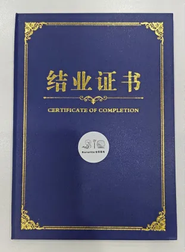
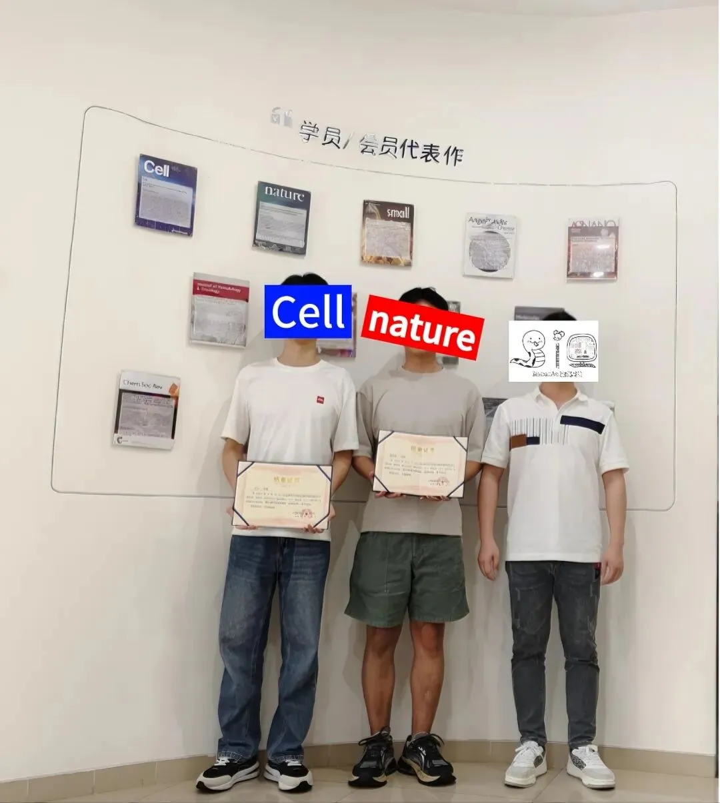
收官合影

实验基地
长期以来Biomamba都在自己的媒体矩阵中分享生信分析技能。生命科学毕竟是物质的科学，脱离了实验 总是玩不转的，大家的分析结果也需要去实验验证。一方面自己想在不同的领域里开疆扩土，追寻些新的可能；另一方面也想为大家的科研生涯全方面保驾护航，未来给大家提供新的服务、交流交流实验技能。所以，Biomamba联合浙江大学博士团队 组建了一个自己的实验室(Biomamba生信基地终于有基地 啦！)，base上海张江。目前还是百业待兴，大家有什么想法可以填写问卷 跟咱反馈反馈：问卷链接：https://www.wjx.cn/vm/tpYsP8D.aspx# 问卷二维码： 更多想法也可以直接添加我们的客服微信[Biomamba_zhushou]聊聊，我们也有专门的实验基地交流群。
更多想法也可以直接添加我们的客服微信[Biomamba_zhushou]聊聊，我们也有专门的实验基地交流群。

实验基地环境一览


经过精心筹备，实验基地的全新实验室正式落址上海南翔古镇(总占地200㎡，尽情发挥)，现对外开放！全新的场地，全新的配套！实验基地场地配套：独立的办公场地、二级生物实验室(细胞房、分子实验室)
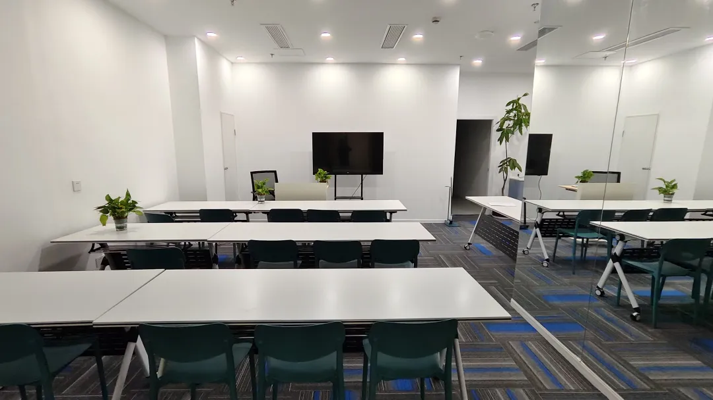
实验基地仪器配套：生物安全柜，倒置荧光显微镜；高速冷冻离心机；qPCR仪；普通PCR仪；化学发光成像系统；酶标仪；紫外分光光度计；蛋白电泳设备，核酸电泳设备；半干转仪；单细胞仪。其他大型设备正逐步进场，小伙伴们有想要的仪器也可以留言或私信我们。 实验场地与仪器一应俱全：
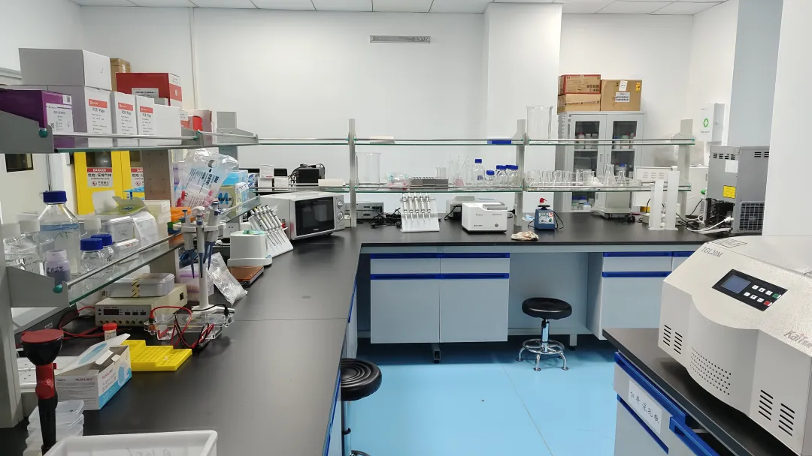
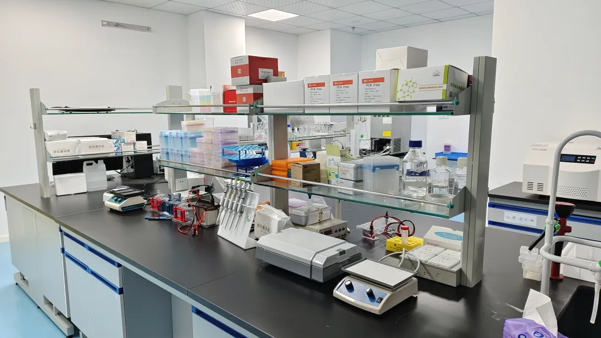
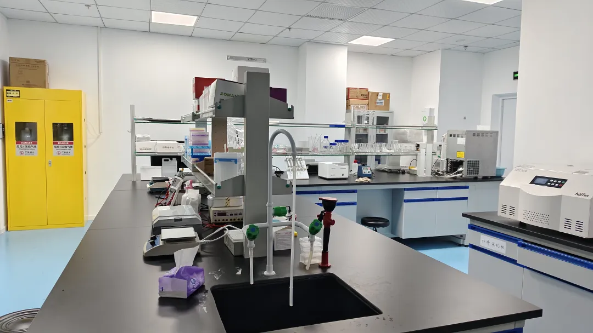
细胞房与超净台也替大家试运行过啦：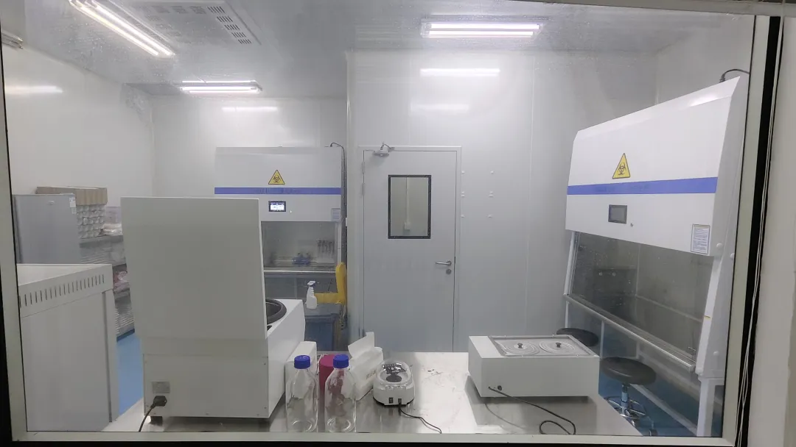
实验基地斥巨资引进的流式细胞仪到了！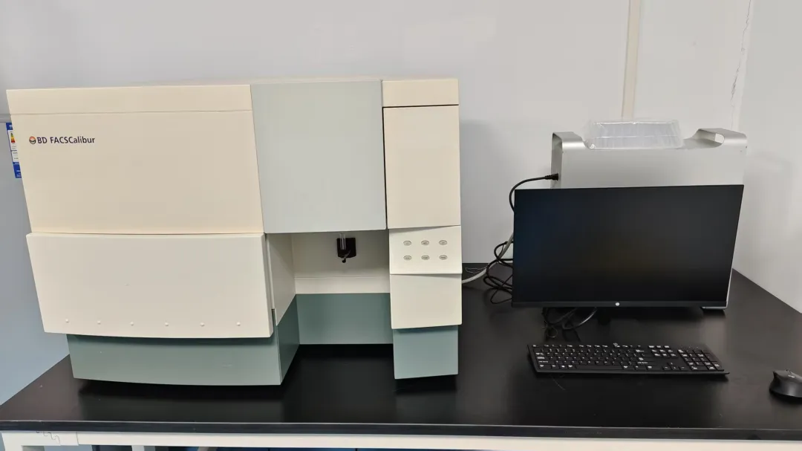
我们还开设有实验基地交流群，欢迎大家入群讨论
已有生信基地联系方式的同学无需重复添加


如何联系我们

 留一个领取资料、免费两周学习版服务器的微信号[Biomamba_zhushou]，方便各位随时交流。同时我们也构建了交流群矩阵，欢迎大家入群讨论。
大家可以阅读完这几篇之后添加给生信入门初学者的小贴士没有检索，就没有发言权
留一个领取资料、免费两周学习版服务器的微信号[Biomamba_zhushou]，方便各位随时交流。同时我们也构建了交流群矩阵，欢迎大家入群讨论。
大家可以阅读完这几篇之后添加给生信入门初学者的小贴士没有检索，就没有发言权
已有生信基地联系方式的同学无需重复添加
 您点的每个赞和在看，我都认真当成了喜欢
您点的每个赞和在看，我都认真当成了喜欢